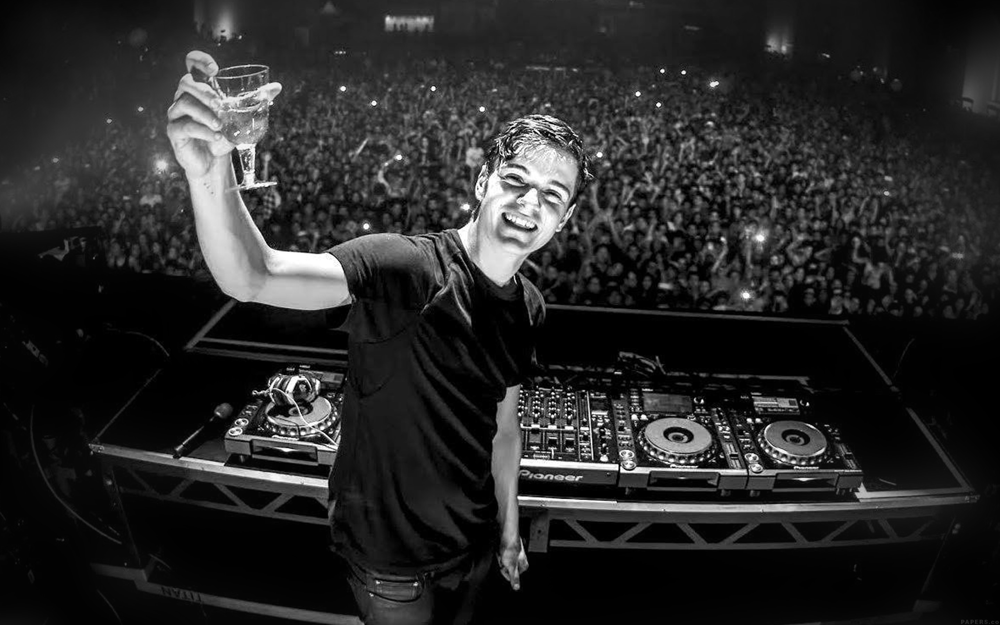

Martin Garrix is een wereldberoemde Nederlandse dj en muziekproducent die al op jonge leeftijd is begonnen met muziek maken. Hij werd geboren op 14 mei 1996 in Amstelveen. Als kind was hij al geïnteresseerd in muziek en keek hij veel naar dj’s op tv en op internet. Op zijn achtste begon hij met gitaar spelen en later ontdekte hij dat hij zelf muziek kon maken op de computer. Dat was het begin van zijn carrière als producer.
Zijn echte doorbraak kwam in 2013 toen hij het nummer “Animals” uitbracht. Dit nummer werd een gigantische wereldhit en stond in bijna elk land hoog in de hitlijsten. Door dit succes werd hij in één keer internationaal bekend, terwijl hij nog maar 17 jaar oud was. Dit maakte hem een van de jongste grote dj’s ooit in de dancewereld.
Na “Animals” bleef Martin Garrix hard werken aan nieuwe muziek. Hij bracht verschillende hits uit en werkte samen met bekende artiesten zoals Usher, Dua Lipa, Khalid, Bebe Rexha en Macklemore. Zijn stijl bestaat vooral uit EDM (Electronic Dance Music), met veel energie, sterke drops en emotionele melodieën. Hierdoor spreken zijn nummers een groot publiek aan over de hele wereld.
Martin Garrix staat ook bekend om zijn optredens op de grootste festivals ter wereld. Hij heeft op plekken gestaan zoals Tomorrowland, Ultra Music Festival, Coachella en nog veel meer grote evenementen. Zijn shows zijn heel indrukwekkend met lichtshows, vuurwerk en veel energie op het podium. Tijdens zijn optredens weet hij duizenden mensen tegelijk te laten dansen en meezingen.
Naast optreden en muziek maken heeft hij ook zijn eigen platenlabel: STMPD RCRDS. Hiermee helpt hij andere artiesten om hun muziek uit te brengen en door te groeien in de muziekindustrie. Hij vindt het belangrijk om jonge talenten een kans te geven en hun te ondersteunen in hun carrière.
Door de jaren heen is Martin Garrix uitgegroeid tot een van de grootste dj’s ter wereld. Ondanks zijn succes blijft hij hard werken en nieuwe muziek maken. Zijn verhaal laat zien dat je met talent, doorzettingsvermogen en passie al op jonge leeftijd heel ver kunt komen. Hij is een inspiratie voor veel jonge producers en dj’s over de hele wereld.